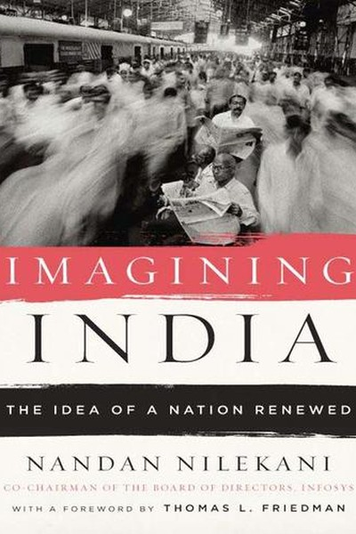

Library › Business & Startups
Imagining India — Summary & Key Lessons

Ideas built modern India — and can build its future.
📖 OPEN THE FULL INTERACTIVE BREAKDOWN →🌐 Read it in Hindi, Hinglish, Gujarati, Tamil & 22 more languages — free, with audio.
💡 The Big Idea
Nandan Nilekani — Infosys co-founder and architect of Aadhaar — writes the definitive 'ideas' book for modern India: a sweeping account of how India's ideas about itself have changed, from independence's state-led socialism to the liberalized, globalized, technology-driven nation of today. His core argument: ideas shape nations more than resources do — India's poverty was partly a poverty of imagination (what the state, the market and the citizen were allowed to be), and its growth is the fruit of changed ideas about education, entrepreneurship, infrastructure and identity. The book is both a history of Indian economic thought and a manifesto for what India could become if it keeps choosing the right ideas.
🧠 The 6 Key Lessons
Lesson 1: Ideas Are Infrastructure: The Nation Is What It Imagines Itself to Be
Part 1: The Idea of India
Nilekani's foundational claim: nations are built on ideas before they're built on roads. India's first four decades of sluggish growth were not a resource problem — India always had resources, people and land — but an idea problem: the belief that the state must control everything, that markets are suspect, that the private sector is greedy. The 1991 shift was fundamentally an idea shift: from 'the state provides' to 'the citizen builds'. The universal lesson: check your operating ideas before your operating budget. The constraint that binds you may not be resources but the assumptions you inherited about what's possible.
📖 Example: Nilekani contrasts the 'idea of India' under Nehru (state-led heavy industry, suspicion of enterprise) with the post-1991 idea (globalized, entrepreneurial, tech-driven) — the same country, two radically different outcomes, purely because the ideas changed. Read the full example →
⚡ Do this: Write your three operating beliefs about your career/business. For each, ask: 'Is this a fact or an inherited idea?' Challenge one that is inherited.
Lesson 2: Education Is the Great Unlock: The Demographic Dividend Is a Skill Dividend
Part 2: The People
Nilekani argues that India's famous 'demographic dividend' — a young population — is only a dividend if the young are educated and employable; otherwise it's a demographic liability. He chronicles the transformation of Indian education from rote-heavy, exam-driven systems to the IITs, private colleges and skill ecosystems that powered the IT boom — and argues that the next unlock is deeper: quality education for all, not just the elite. The lesson for individuals: your age profile is not your destiny — your skill profile is. The person who treats learning as a lifelong infrastructure investment converts youth (or any age) into a dividend.
📖 Example: Nilekani shows how the IIT system, for all its flaws, created a talent pipeline that built the software industry — and how the same hunger, applied to vocational and mass education, could transform millions more lives. Read the full example →
⚡ Do this: Treat yourself as a 'skill dividend' project: identify the one skill whose absence caps your income/impact, and schedule 30 minutes daily to build it.
Lesson 3: Infrastructure Is Freedom: Connectivity Multiplies Opportunity
Part 3: The Foundation
Nilekani's chapters on Indian infrastructure — roads, power, ports, and later digital rails — argue that infrastructure is not a luxury but the physical form of opportunity. A village connected by a road is a village with a market; a phone with a data connection is a citizen with a bank. His Aadhaar experience taught him that digital identity is infrastructure too — the plumbing that lets the poor access services without intermediaries. The lesson: invest in the pipes, not just the products. Whether it's a nation, a company or a career, the person who builds connectivity — networks, systems, distribution — multiplies everything that flows through it.
📖 Example: Nilekani describes how the combination of mobile phones and digital identity transformed Indian finance — millions who never had a bank account suddenly could receive subsidies and payments directly. The infrastructure, not the slogan, was the liberation. Read the full example →
⚡ Do this: Identify the 'infrastructure' in your field — the platform, network or system that multiplies effort. Position yourself on the fastest-growing pipe, and build your own distribution.
Lesson 4: The State's New Role: Enabler, Not Owner
Part 4: The Politics
Nilekani walks the tightrope between market worship and state worship: India's growth required the state to retreat from owning businesses — but also to build the enabling institutions (regulation, identity, payments, courts) that markets need. His formula: the state should own the pipes, not the products — provide the rails (infrastructure, identity, rules) and let entrepreneurs run the trains. The lesson for leaders: know what to own and what to enable. The founder who insists on controlling everything becomes the bottleneck; the one who builds the platform and enables others compounds. Enablement is not weakness — it's leverage.
📖 Example: Nilekani's own Aadhaar project is the proof: the state built the identity rail, and private innovation (payments, KYC, fintech) exploded on top of it — the state's restraint was the growth engine. Read the full example →
⚡ Do this: In your team or business, identify one thing you currently 'own' that others could run better if you enabled them. Hand over the operation; keep the standard.
Lesson 5: The Global Indian: Identity Without Borders
Part 5: The World
Nilekani's chapter on the Indian diaspora reframes 'brain drain' as 'brain circulation': the Indians who left returned with capital, skills and global networks — the diaspora became India's venture fund and its export channel. His point: identity and borders are no longer aligned for the modern professional — the most valuable people are those who can operate across cultures, markets and time zones. The lesson: build 'portable identity' — skills and reputation that travel. The person whose value is tied to one office is fragile; the person whose value travels is a global asset. Expose yourself to the world; the world will compound you.
📖 Example: Nilekani shows how the software industry's model — Indian talent serving global clients — turned the diaspora's credibility into India's export machine, and how returning founders brought back Silicon Valley's playbook to Bangalore. Read the full example →
⚡ Do this: Build one 'portable' asset this quarter: a skill, a certification, an online presence, or a network that would be valuable outside your current city/company.
Lesson 6: The Idea of the Future: Choose the Right Ideas, Get the Right Future
Part 6: The Vision
Nilekani ends with a call to treat the future as a choice, not a forecast: India's destiny will be determined by which ideas win — protectionism or openness, identity politics or opportunity politics, rent-seeking or rule of law. His optimism is conditional: the future is not written; it is argued into being by the ideas people choose to act on. The universal lesson: your personal future is also an argument. The ideas you accept about your limits, your industry, your country — each one is a vote for a future. Choose the ideas that compound: openness, learning, building, honesty. The future is not something that happens to you; it is something you imagine into existence.
📖 Example: Nilekani's own arc — from engineer to Infosys co-founder to Aadhaar architect — is the thesis in one life: each stage required rejecting the 'safe' idea and adopting a bigger one. The imagined India became the built India, one idea at a time. Read the full example →
⚡ Do this: Write the one-paragraph 'idea' you currently hold about your future. Rewrite it with the biggest honest version — then list the first three actions that version demands.
✅ 5-Step Action Plan
- Challenge one inherited operating belief with evidence.
- Start a 30-min daily skill-building habit for your 'dividend' skill.
- Position yourself on the fastest-growing infrastructure/network in your field.
- Enable someone else to run something you currently own.
- Build one portable asset (skill, presence, network) this quarter.
⚠️ When This Doesn't Work
Nilekani's 'India's future is an idea we must imagine and build' is the most visionary Indian book ever — and PMC Bank is the warning that imagining India requires accounting for India: the cooperative bank that served Mumbai's small depositors — the exact 'financial inclusion' institutions Nilekani's vision celebrates — collapsed when its own managers looted it, and thousands of ordinary savers lost decades of work. The caveat: institutional imagination must include institutional integrity. Building India's future on trust without audits is building on the same sand every Indian financial scandal has built on. Imagine big; verify everything.
💀 The Graveyard Proves It
🏦 PMC Bank — The ₹4,355 Crore Scam in a 'Safe' Cooperative Bank. Burn: ₹4,355 crore hidden in one borrower's account; 1.2M depositors trapped. Read the full case study →
💬 Best Quotes from Imagining India
- “India's poverty was partly a poverty of imagination.”
- “The state should own the pipes, not the products.”
- “The future is not a forecast — it is a choice of ideas.”
Interactive version: mark lessons as read, listen in your language, share quote cards.